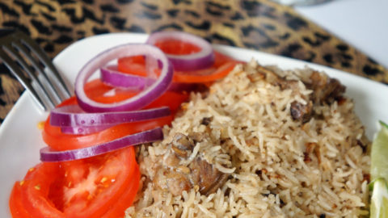

Home
Pilau Recipe

Courtesy: Yummy Mardley
Description
Ingredients
- 3 cups rice
- 1 kg beef, cut into small pieces
- 1 tablespoon pilau mix
- 2 large onions, sliced
- 3 tomatoes, chopped
- 2 potatoes (optional), peeled and cubed
- 1-inch piece ginger, grafted
- 4 cloves garlic, crushed
- 4 cups beef stock or water
- 3 tbsp cooking oil
- Salt to taste
Pilau spices
- 1 tsp cumin
- 1 tsp cardamon
- 1 tsp black pepper
- 1/2 tsp cloves
- 1 small cinnamon stick
Method
- Cut the beef into medium size pieces
- Wash the meat properly
- Put the meat in a cooking pot and add little water
- Boil the meat with medium heat
- While boiling the meat prepare other ingredients